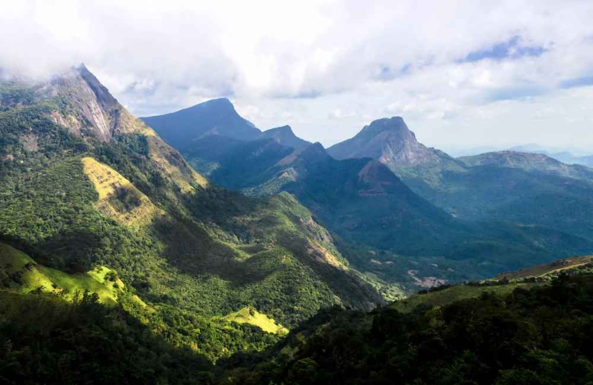
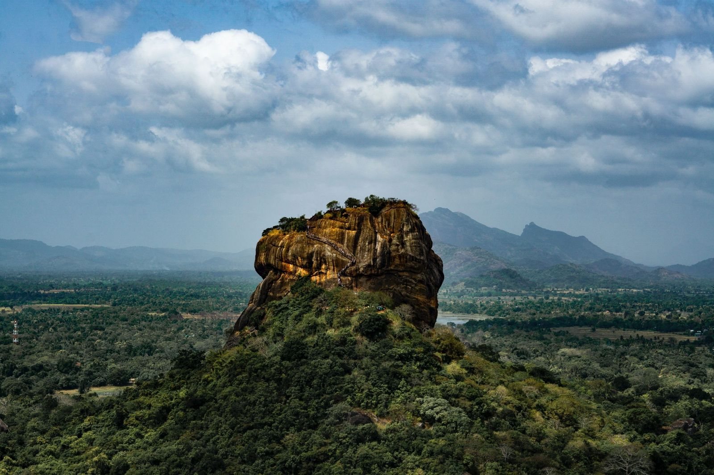
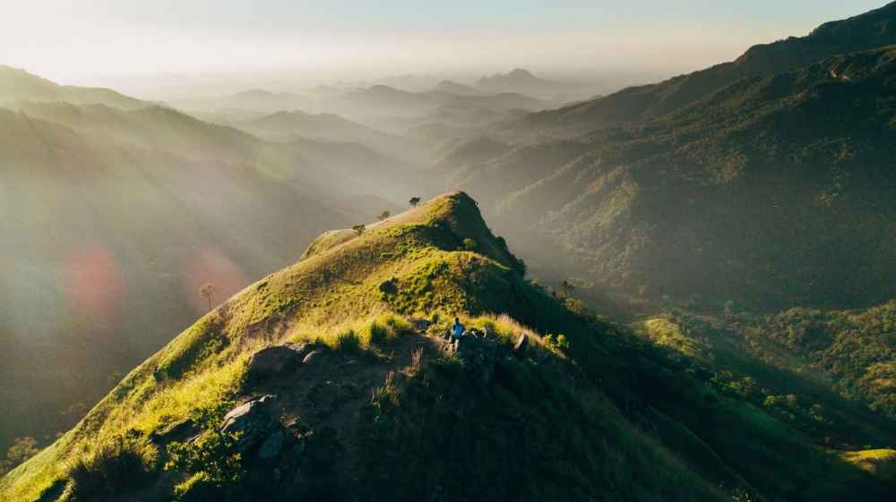

Embark on a journey of breathtaking vistas and untamed wilderness as you explore the enchanting landscapes of Sri Lanka through hiking.
Best Places for Hiking!
KNUCKLES MOUNTAIN RANGE
The trek heads deep into the rainforest and the rugged wild of the Knuckles Range. The range was named due to their resemblance to a clenched fist. Picture yourself immersed in majestic mountains reaching up to 2000m. The landscape is dotted with huge cascading waterfalls. You pass through tiny villages and spend the night wild camping in a real wilderness. You’ll likely see buffalos and if you’re lucky, you could even spot boars, toque macaque monkeys and purple-faced monkeys. If you’re extremely lucky, you could see elephants and leopards in the jungle too.

PIDURANGALA & SIGIRIYA
Sigiriva is often described as Sri Lanka’s most famous viewpoint. The sight of the Sigiriya, also known as Lion Rock, is one that adorns so many photographs of the country. What it’s tough to tell from the photographs though is that Sigiriya is actually also a fortress. The fortress was built by King Kashyapa way back in 477BC atop the rock, with a plateau halfway up the side of the rock providing a gateway. Oh, yeah, and that gateway is in the shape of a lion.

ELLA ROCK & LITTLE ADAM’S PEAK
Ella has some of the best day hikes in Sri Lanka. They’re incredibly accessible and will lead you to great views. First up, the trek up Little Adam’s Peak, which goes up to 1141m and takes about an hour or maybe even less each way. This is a fairly easy hike in terms of length, but go early to beat the crowds. This is a fantastic way to see Ella, and get a feel for the layout of the land.

JUST KEEP IN MIND!
Prioritise your safety above all else, and research the reputation of the rafting tour operators before selecting one. It is recommended that you do not embark on the more dangerous waters before you’ve accumulated prior experience navigating canyons and rafts. Make sure to wear comfortable clothing that is quickly drying when on your journey, and the equipment provided by the guides are a must.